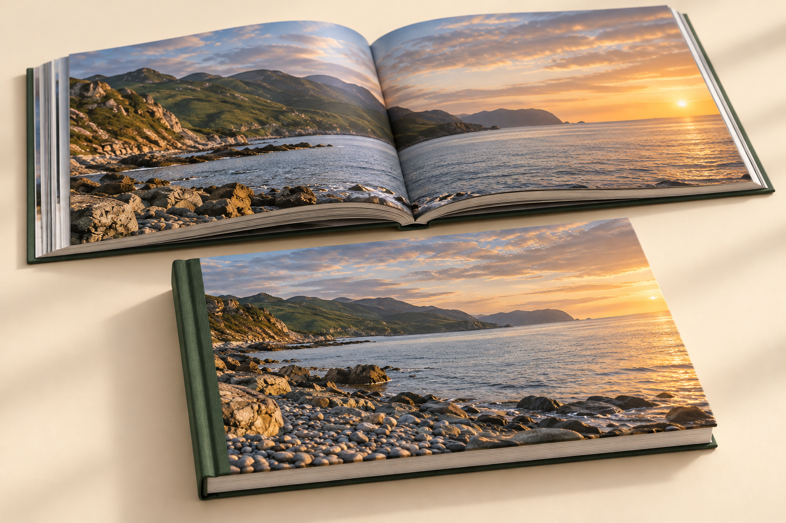

Стоимость — после расчёта параметров. Доставка отдельно.

Хроника
Многостраничная фотокнига
Семейная хроника, путешествие или большая коллекция фотографий.
5–150 разворотов
Форматы, бумага и обложка
30 × 21 см · горизонтальная / 21 × 30 см · вертикальная / 20 × 20 см · квадратная / 30 × 30 см · квадратная / 25 × 25 см · квадратная / 40 × 30 см · горизонтальная
Бумага · 200 г/м²; Бумага · 250 г/м² · flex bind
10–300 страниц, то есть 5–150 разворотов. Flex bind доступен для 21 × 30, 20 × 20, 25 × 25 и 30 × 30 см. Вариант 40 × 30 см требует отдельного согласования конструкции обложки.
Фотография, экокожа, переплётный материал или ткань — примеры можно рассмотреть в конструкторе.
Стоимость — после расчёта параметров. Доставка отдельно.
На иллюстрациях — вымышленные истории и примеры материалов. В вашей книге будут ваши фотографии. Конкретный оттенок и конструкцию обложки согласуем перед заказом.
Собирать можно по-разному.
Самый простой способ — загрузить фотографии и оставить автоматическую раскладку. Хотите управлять каждой страницей? В редакторе есть композиции, кадрирование, подписи и творческие детали. Они собраны в раскрывающихся блоках.
«Моменты» — плотные развороты, «Свет» — фотопечать, «Хроника» — многостраничная книга. Печатаем по премиальному каталогу ФотоФиеры. Форматы, бумага и объём зависят от выбранного вида. Конкретную обложку, дополнительные детали и стоимость подтвердим после просмотра заявки.